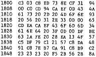

80-Bus Journal |
Juli/Aug. 1983 · Ausgabe 7/8 |
Prozeduren schreiben, um die Variablen und Arrays dem Casmon zu übergeben.
Beispiel für Speicherung eines Naspen Files:
W ; Naspen Write Kommando
S ; Casmon Save ohne Arg., da schon bekannt
name ; File Name
E ; Exit zum Naspen
Es brechen also herrliche ‚Cassetten‘ Zeiten an.
Tabelle der hardwareabhängigen Routinen:
| DPLAY | #CAFE |
| BEEP | #CAEA |
| DREWIND | #CB21 |
| WAIT | #CB18 lang |
| DSTOP | #CB25 |
| DELAY | #CB66 kurz |
| DPAUSE | #CB29 |
| DFORWARD | #CB2D |
| DRECORD | #CB31 |
| TAPESTART | #CB35 entspricht ‚X‘ Cmd |
Initialisierung der Interrupts: #CA94
Also Test der Zählwerksimpulse:
0D00 CD 94 CA CF F7 18 FC. und Recorder an.
Tabelle der Änderungen für BASIC und Compass:
SCAL ‚Y‘ muß Sprung nach C800h bedeuten !!!!
Basic: LD A,'Y'
LD (FE97h),A
LD (FEB9h),A
LD (FE7Dh),A
LD HL,1B18h
LD (F52Bh),HL
RET
Compass: (ab #E000 reloziiert)
LD A,'Y'
LD (E3D1h),A
LD (E3D9h),A
LD (E3E7h),A
LD A,4C ; neue Checksumme
LD (F97Eh),A
RET
Naspen : SCAL ‚V‘ und SCAL ‚W‘ zu SCAL ‚Y‘ ändern.
Tabelle der Filetyp- Kürzel:
| .pen | Naspen File | .ASM | Compression ASM |
| .BAS | Basic V4.7 | .XBAS | X-tal Basic |
| .FTH | Hull – Forth | .OBJ | Object – file |
| .PAS | Nascom Pascal | .HPAS | Hisoft Pascal |
| .ZASM | Zeap ASM | ||
Dies sind selbstverständlich nur Vorschläge.
| Seite 25 von 52 |
|---|